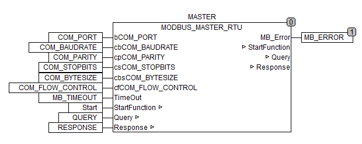
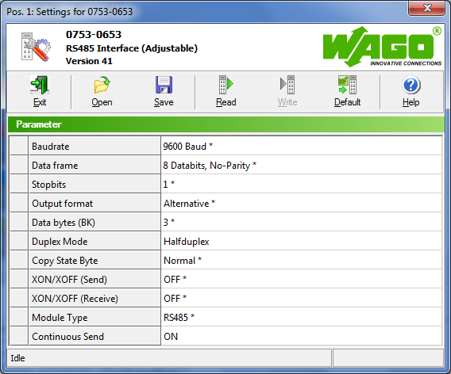
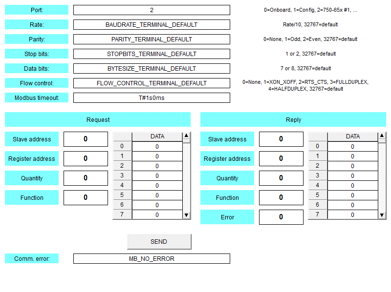

Пример 2. Как обмануть WAGO-I/O-CHECK и настроить Modbus Master
1 июн. 2011 г., 12:12 пользователем Maxim Ananskih [ обновлено 17 авг. 2011 г., 10:18 ]
|
• Для опроса ведомых устройств Modbus используется библиотека Modb_l05.lib и модули последовательных интерфейсов с настраиваемыми параметрами • Коммуникационные модули нужно предварительно настроить, для чего обязательно требуется утилита WAGO-I/O-CHECK • Модули с предустановленными параметрами тоже можно конфигурировать, особым образом изменив конфигурационные файлы WAGO-I/O-CHECK • Прилагается пример программы для проверки работы Modbus Контроллер WAGO обычно выступает ведомым (Slave) в сетях Modbus. Однако можно сделать его и ведущим (Master). Для этого используется библиотека Modb_l05.lib. В этой библиотеке вы найдете функциональный блок MODBUS_MASTER_RTU, с помощью которого можно опрашивать по Modbus ведомые устройства. Блок предназначен для работы с любыми контроллерами, кроме контроллеров со встроенной поддержкой Modbus (750-812, 750-814, 750-815 и 750-816).  Иллюстрация 1: Пример использования MODBUS_MASTER_RTU Этот функциональный блок может использоваться с коммуникационными модулями 750-65x, со встроенным портом RS-232 контроллера 750-873 и с портом для программирования контроллеров. Но как правило, протокол Modbus применяется для обмена по интерфейсу RS-485, для работы с которым используется модуль 750-653 или 753-653. Коммуникационные модули WAGO обычно обладают предустановленными настройками скорости, количества стоповых битов, проверки четности и количества битов в байте. Вариант настроек модуля необходимо указывать при заказе. Сделано это для того, чтобы упростить обслуживание систем автоматизации: чтобы заменить вышедший из строя модуль, достаточно заказать модуль с такими же настройками. Настройки соответствуют части заказного номера, которая указывается после косой черты. Так, например, модуль 750-653 доступен в следующих вариантах:
Если попробовать запустить приведенную на рисунке 1 программу с модулем 750-653 с «жестко» заданными настройками на двухпроводной линии RS-485, мы увидим, что блок MODBUS_MASTER_RTU выдает ошибку контрольной суммы. Почему так происходит? Дело в том, что при полудуплексном режиме обмена и прием, и передача осуществляется по одной и той же паре проводов, к которой подключается и приемник, и передатчик. Узел RS-485 при передаче сообщения должен отключать приемник, иначе он примет «эхо» - тот же сигнал, что он сам и передал. Поэтому модуль RS-485 имеет специальную настройку для работы с полудуплексной линией связи. Эту настройку можно задать с помощью программы WAGO-I/O-CHECK.  Иллюстрация 2: Настройка модуля последовательного интерфейса в WAGO-I/O-CHECK Для работы с двухпроводной линией нужно задать параметру Duplex Mode значение Halfduplex (полудуплекс). Однако, как вы догадываетесь, это можно сделать только для настраиваемых модулей. Что же делать, если у нас обычный 750-653 с «жестко» заданными параметрами? На самом деле, возможностью настройки параметров обладают все коммуникационные модули. Ограничения для модулей с «жесткой» конфигурацией сделаны на программном уровне. Так, программа WAGO-I/O-CHECK проверяет тип модуля в контроллере, и, обнаружив модуль с «жесткой» конфигурацией, запрещает вызывать диалог настройки параметров. К счастью, есть способ обмануть эту программу. WAGO-I/O-CHECK хранит информацию о всех возможных модулях в настроечных файлах. Эти файлы находятся в папке %InstallPath%\Config\Terminal, где %InstallPath% - каталог, в который установлена программа. Например, у меня на компьютере это C:\Program Files (x86)\WAGO Software\WAGO-IO-Check 3\Config\Terminal. Рассмотрим содержимое настроечного файла 07500653_00030000.wdd для конфигурируемого модуля 750-653/003-000: ---------------------------------------------------------- [LED] Нас интересуют выделенные желтым цветом параметры. Очевидно, что параметр Adjustable как раз и определяет возможность настройки модуля. В секции [Default] указано содержимое регистров модуля по умолчанию. Сравним с конфигурационным файлом для обычного модуля: ---------------------------------------------------------- Как видим, таких же строк, как у настраиваемого модуля, и которые мы обозначили желтым цветом, в этом файле нет. Что если скопировать их сюда с помощью текстового редактора (например, Notepad)? Попробуем это сделать и убедимся: теперь окошко конфигурации стало доступным и для этого модуля! Небольшой момент, возникающий при использовании Windows 7: система не позволяет сохранить отредактированный файл в каталог, где он должен храниться. Нужно сначала скопировать его в другое место (например, на рабочий стол), отредактировать, а затем переместить обратно. Как быть, если мы хотим указывать параметры обмена в нашей программе, а не настраивать их предварительно в WAGO-I/O-CHECK? К сожалению, определение типа модуля встроено в программное обеспечение и библиотеки контроллера. Поэтому задать новые параметры так же, как для настраиваемых модулей, не получится. Необходимо использовать WAGO-I/O-CHECK, а соответствующие входы блока просто оставить неприсоединенными, или же задать им значения по умолчанию: VAR Есть и еще одна причина, по которой мы не сможем обойтись без WAGO-I/O-CHECK. Дело в том, что только с её помощью можно изменить значение параметра Continuous Send (см. рисунок 2). Если этот параметр имеет значение «ON», байты для передачи по последовательному интерфейсу берутся из внутреннего буфера модуля, имеющего размер 16 байт. Если же эту настройку отключить, то данные для передачи берутся напрямую из образа процесса, в котором для этого отводится от 3 до 5 байт, в зависимости от настроек модуля (по умолчанию 3 байта). Один байт соответствует 10 битам (стартовый + 8 битов данных + 1 стоповый). Получается, что при скорости обмена 9600 бит/с нам нужно передавать в модуль 960 байт в секунду, а для этого циклы сканирования нашей программы, включая обмен по внутренней шине контроллера, должны выполняться не реже чем 320 раз в секунду. То есть, все вместе должно занимать не более чем 3,125 миллисекунд. К сожалению, так бывает только в самых идеальных случаях. На практике же данные в модуль передаются реже, что приводит к задержкам между передачей отдельных байтов по последовательному интерфейсу. Если такая задержка превысит определенную величину, это будет рассматриваться удаленным устройством Modbus как ошибка. Согласно протоколу обмена Modbus, на ошибочные запросы ведомые устройства не отвечают. В итоге мы получим тайм-аут при приеме ответа от устройства. Как вы уже, наверно, догадались, по умолчанию параметр Continuous Send в модулях отключен! А включить его можно только с помощью WAGO-I/O-CHECK. После изменения этой настройки, новое значение будет сохранено в энергонезависимой памяти модуля ввода-вывода. Для того, чтобы протестировать работу с протоколом Modbus, я написал очень простой примерчик. Собственно, вся программа уместилась на рисунке 1. Для управления программой используется встроенная визуализация CoDeSys. Чтобы протестировать обмен, нужно загрузить в контроллер прилагаемый файл и открыть окно визуализации.  Иллюстрация 3: Работа с примером программы Настроив параметры в верхней части экрана визуализации (номер порта и настройки обмена), запустите программу на выполнение. Затем задайте значения, необходимые для запроса к устройству: адрес устройства (Slave address), код функции (Function), а также адрес регистра для данной функции (Register address) и количество регистров (Quantity), если эти параметры требуются для данной функции. Код функции может быть следующим:
В табличке DATA нужно задать данные, если они требуются для данной функции, и затем нажать кнопку SEND. После этого, при получении ответа от ведомого устройства, его поля будут показаны в правой части экрана. Если же произойдет коммуникационная ошибка, она отобразится в нижней части. | ||||||||||||||||||||||||||||||||||||||||||||||||||||||||